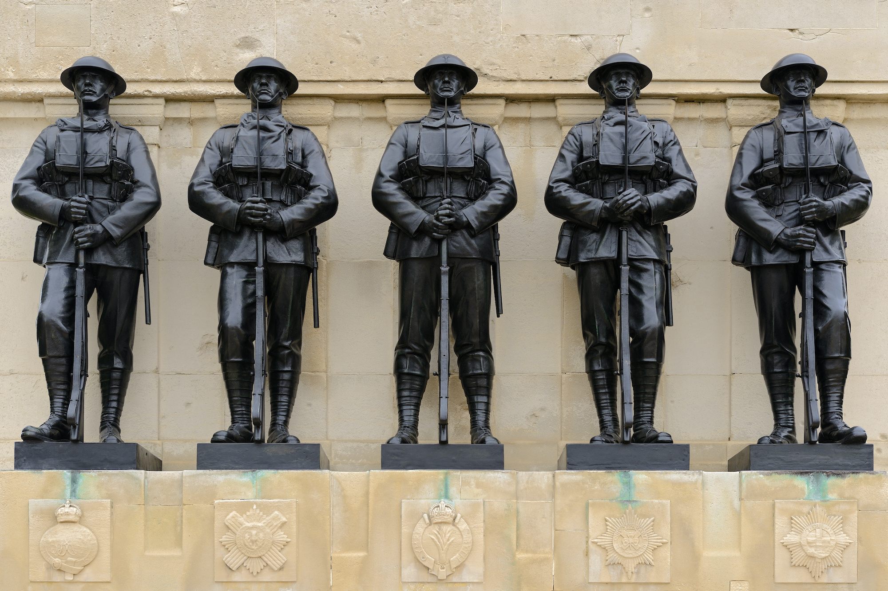

ホーム
ホーム
差別とは？
アンケート結果
SDGsとの関係
組織
歴史
差別の実態
雇用
教育
逮捕率など
エンタメ業界
スポーツ界
音楽界
映画界
他の差別
性差別
アジア人差別
性的指向
宗教差別
その他
サイトマップ
製作者紹介
参考文献
English
ホーム
歴史
歴史
このページは米国の歴史、米国での黒人差別の歴史をタイムライン形式でまとめています。スクロールし、イベントを押すと説明が見れます。
第 ~ 章
第一章
第二章
第三章
第四章
第五章
第六章
第七章
第八章
黒人差別
第一章: 大陸の発見 / 13の植民地(13 colonies)の誕生
新大陸の発見
奴隷輸入
13の植民地誕生
七年戦争(1756年~1763年)
砂糖法(1764年)
印紙法(1765年)
タウンゼンド諸法(1767年)
ボストン茶会事件(1773年)
強圧的諸条令(1774年)
1500
1774
第二章: 独立戦争の開幕
レキシントン・コンコードの戦い(1775年)
第二回大陸会議(1775年5月)
トマス=ペインによる「コモン=センス」の発行(1776年1月)
アメリカ独立宣言(1776年7月)
ヨークタウンの戦い(1781年9月〜10月)
終戦(1783年9月)
1775
1783
第三章: 独立戦争後のアメリカの歩み
ルイジアナ買収(1803)
ハイチ独立の影響(1804年)
米英戦争(1812年)
モンロー教書のはっぴょう(1823年)
1800
1823
第四章: 南北戦争
カンザス・ネブラスカ法(1854年)
ハーパーズ・フェリー襲撃事件(1859年)
エイブラハム・リンカーンが大統領に当選(1860年)
サムター要塞攻撃事件(1861年4月) ...
七日間の戦い(1862年) ...
奴隷解放宣言(1863年) ...
ステッドマン砦の戦い(1865年) ...
1854
1865

第五章: 第一次世界大戦の幕開け
サラエボ事件(1914年6月28日) ...
ロンドン秘密条約調印(1915年4月)
ヴェルダン要塞攻防戦(1916年2月) ...
十月革命(1917年11月) ...
ウィルソンの十四ヶ条(1918年1月) ...
1914
1918
第六章: 第二次世界大戦
ポーランド侵攻(1939年)
太平洋戦争の勃発(1941年)
ミッドウェー海戦(1942年) ...
戦争の終結(1945年)
1939
1944
第七章: 冷戦
核爆弾の開発(1944年)
ヤルタ会談(1945年) ...
マーシャル・プラン (1947~1948) ...
北大西洋条約機構[NATO](1949年 4月)
朝鮮戦争(1950年~) ...
ベトナム戦争(1955年~1975年)
キューバ危機(1962年)
冷戦の終結(1989年)
1945
1989
第八章: 21世期のアメリカ
アメリカ同時多発テロ(2001年9月11日)
イラク戦争(2003年)
バラク・オバマ大統領就任(2009年)
2001
2009
黒人差別の歴史
奴隷貿易(1619年)
奴隷制度成立(1670年)
奴隷解放宣言(1861年)
バス・ボイコット運動(1955年)
ワシントン大行進(1963年8月28日)
1619
1963